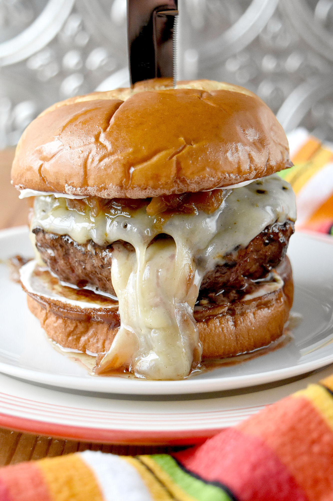

We're Here, We're Gruyere, Get Used to It Burger

"Combining the glory of French Onion soup with the tastiness of the all-American hamburger, this seasoned burger is topped with
caramelized onions and a hefty dose of Gruyere cheese. The bun is slathered in au jus gravy before a toasting, like you at your
wedding. Sweet pickle chips are optional but recommended."
Ingredients
- 1 Tbsp butter
- 1 large yellow onion, coarsely chopped
- 1 packet of au jus gravy mix
- 1 packet of French onion soup mix
- 1 pound ground beef
- 4 buns
- 1 cup shredded Gruyere cheese
- Sweet baby gherkin pickles
Steps
- Melt the butter in a wide frying pan over medium-low heat. Add the onion and stir to coat. Cook over fairly low heat, stirring
occasionally, until the onion is very soft and a deep, sticky golden brown, about 20 to 30 minutes.
- Prepare the au jus: If you have your own handy, that's great. But you don't have to brag about it. Some of us just don't keep
au jus lying around. So, if you don't don't be ashamed. Just use the packaged stuff and mix it with the right amount of water
in a small saucepan. Set aside.
- Fold the French Onion soup mix in with the ground beef and make 4 patties--no need to season further with salt or pepper. Cook
as you normally would.
- Before the burgers finish cooking, top them with a pile of caramelized onions and shredded Gruyere. Cover or tent with a piece
of foil and wait for it to melt into delicious gooeyness. It's fun to pretend like you're on a little camping trip with your burger.
Maybe tell it a spooky story while it's in the tent. But nothing too scary.
- This step is crucial--Pour some au jus on a plate, and rest the buns in it for a few seconds. Don't submerge the whole bun, you're
just wetting the sides that touch the burger. After dipping, toast the buns.
- BUILD YOUR BURGER: Dipped bottom bun, caramelized onion-and-cheese-covered burger, sweet pickles, then dipped top bun.